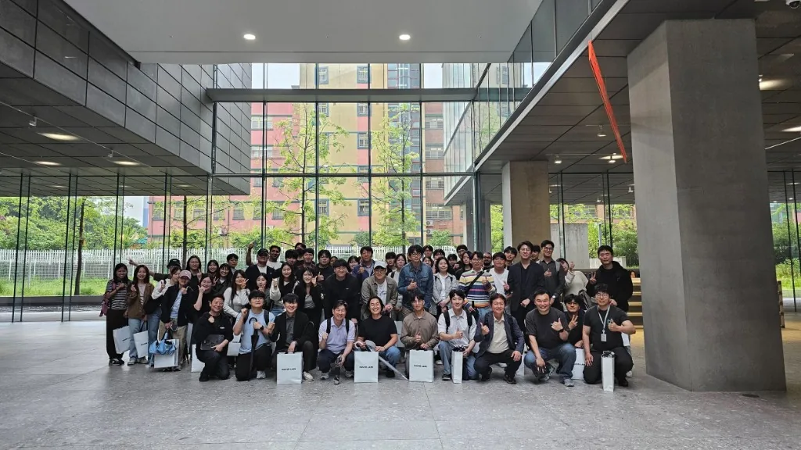

FAQ & Contact
진학 안내
- KIST에서는 진행 중인 연구과제에서 필요한 분야와 인원에 따라 학생 연구원(대학원생)을 모집합니다. 일반적인 경로는 과제의 인력 수요 발생 → 학부 인턴 채용 → 실제 연구 참여 → 대학원 진학 논의 순서입니다.
- 학부 인턴은 주로 학점인정형(유급 학부 인턴) 또는 인턴(학부 졸업 후)으로 모집하며, 여러 학교에서 모집하므로 경쟁률이 높은 편입니다. 개발 경험, 연구에 대한 관심, 성실함, 가장 중요한 연구실 구성원들과의 적합성을 꼼꼼하게 확인합니다.
- 학연협동과정으로 진학하는 경우에는 서울대학교 또는 고려대학교의 유관 연구실 가운데 연구 주제와 잘 맞는 교수님을 연결합니다. 해당 교수님이 공동지도를 수락하면 학생은 대학 연구실 소속으로 입학하며, 연구과제와 인건비는 KIST에서 지원하고 수업과 학사 관리는 소속 대학에서 담당합니다. 연구 지도는 대학 교수님과 KIST 지도교수가 함께 진행합니다.
- UST AI·로봇 전공으로 진학하는 경우에는 제가 지도교수가 되기 때문에, 별도의 공동지도 교수 연결 없이 바로 진학할 수 있습니다. 수업은 KIST의 UST 전임교원들이 담당하며, 연구 지도와 학위 심사 등 학위과정 전반도 KIST 내에서 이루어집니다.
석사 과정 vs 석·박사 통합과정
개인적으로는 아직 확신이 없다면 석사과정부터 시작하는 것을 추천합니다. 박사과정은 노력만으로 버티는 과정이라기보다, 연구를 좋아하는 성향과 생활 방식이 잘 맞아야 합니다. 오랜 기간 한 문제를 붙잡고 실패를 반복해야 하므로, 이를 평생의 업으로 삼을 수 있을지 신중하게 생각할 필요가 있습니다.
반대로 공부와 연구 자체를 좋아하고, 앞으로도 이 일을 계속하고 싶다는 생각이 비교적 확실하다면 석·박사 통합과정이 좋은 선택입니다. 석사 후 다시 박사과정에 지원하는 시간을 줄일 수 있고, 단기 성과에 쫓기지 않고 조금 더 긴 호흡으로 연구할 수 있습니다.
지도 방식도 조금 다릅니다. 석사과정은 졸업 후 취업을 고려해 AI 분야에서 경쟁력 있는 경험과 성과를 갖추는 데 초점을 둡니다. 비교적 명확한 연구 주제를 선택하고, 국제 AI 학술대회 발표나 실제 과제 성과로 이어질 수 있도록 지도합니다. 석·박사 통합과정도 초반에는 비슷하게 시작하지만, 시간이 지나면서 스스로 문제를 찾고 연구 방향을 정하는 독립적인 연구자로 성장하도록 지도합니다. 석·박사 통합과정은 나중에는 난해하거나 어려운 주제를 골라서, 창의적이고 도전적인 연구를 하도록 유도하고자 합니다.
연구실 생활
저희 연구실은 서로의 연구를 도와주고, 어려운 일이 생기면 함께 해결하는 분위기를 중요하게 생각합니다. 연구원들끼리 비교적 화목하게 지내며, 학회 출장이나 워크숍, MT에도 함께 참여하고 평소에도 연구와 진로에 관한 이야기를 자주 나누려고 합니다.
각자의 시간과 성향은 존중하지만, 모든 일을 완전히 혼자 처리하기보다는 동료들과 자연스럽게 소통하고 도움을 주고받는 분이 연구실에 더 잘 맞을 것 같습니다. 함께한 시간도 좋은 기억으로 남는 연구실 생활을 지향합니다.

Address
Korea Institute of Science and Technology (KIST)
5, Hwarang-ro 14-gil, Seongbuk-gu
Seoul, Republic of Korea
KIST L1 Building